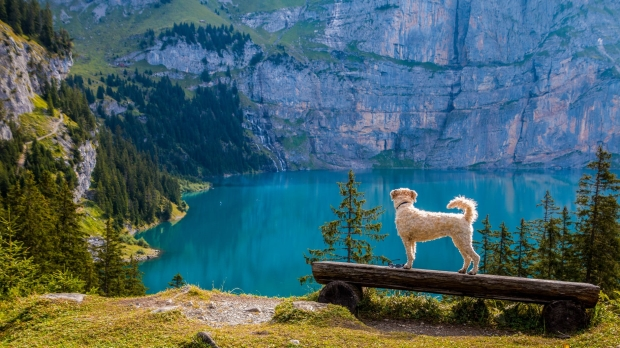

Preston Idaho
Weather Summary
Currently: 65°F
High: 77°F
Low: 45°F
Precipitation: 2%
Humidity: 41%
Wind: 2 mph
5 Day Forecast
| Wed | Thur | Fri | Sat | Sun |
|---|---|---|---|---|
 68°F 68°F |
 64°F 64°F |
 72°F 72°F |
 75°F 75°F |
78°F |
Hike to Bloomington Lake
Bloomington Lake is an awesome place for an afternoon adventure. It's a beautiful lake tucked into a mountain and a very easy hike. Once there, you can swim, hit the rope swing, have a picnic, or hammock if you want.
Bloomington Lake is deep in the mountains West of a small town called Bloomington. The road from the town to Bloomington Lake is a narrow dirt road. It takes about 35 minutes to take this road and most cars should be able to handle it. There's plenty of parking at the trailhead and some bathrooms as well. You can also get to the lake from the West side of the mountains. Just take Cub River Road north of Franklin, Idaho until you get to Willow Flat Campground. The trailhead is just South of the campground. However the trail is quite a bit longer from this side, I'd say about 3 miles to the lake.
The trail itself is about a 1/2 mile to the lake and back. It's very short and easy and almost everyone should be able to handle it. I've even seen people carry kayaks and paddleboards up to the lake. Once you get to the lake there are trails that go along both sides. On the East side of the lake, you can find a rope swing from a large tree and on the South side there are some cliffs you can cliff jump from. There are also some great places to hang a hammock and take in the view. I believe you can camp near the lake and if not, there are plenty of areas to camp on the way to the lake.